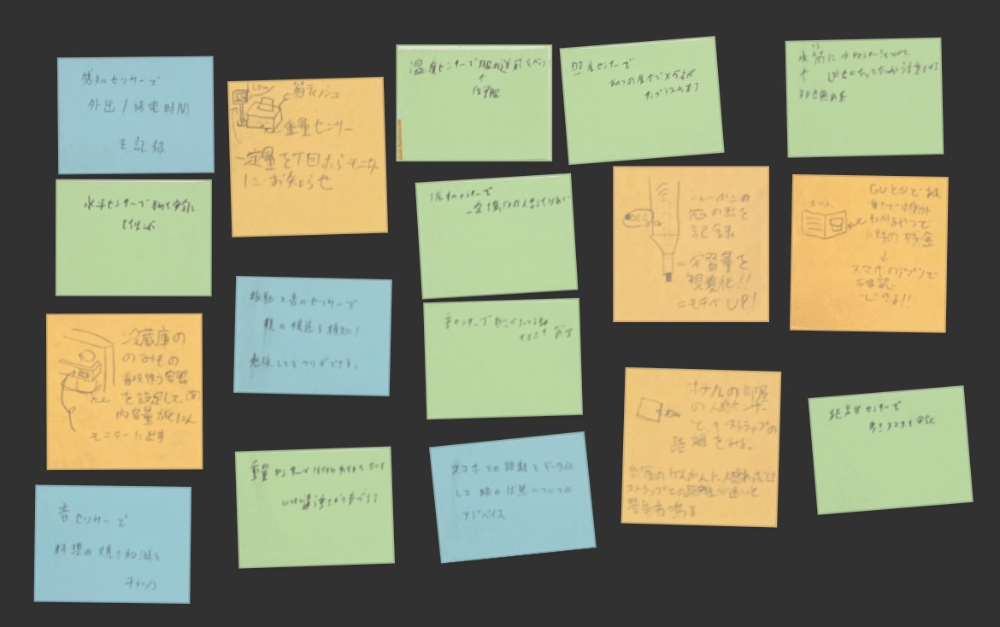

センサーとデータ保存を使ったアイデア

※一部の画質が粗く読み取れないポストイットがあります。申し訳ありません...
距離センサーを使用し、スマホ画面と顔との距離を計測・保存します。
距離の変化によって眼の状態へのアドバイスをしてくれます。
音センサーを使用し、より美味しい料理を作るサポートができます。
揚げや焼きなど加減の難しい工程でも安定した調理が可能です。
Arduinoからのデータ送信時の注意
PCを経由しArduinoからIoTサーバーへデータを送信する際は、実行の順番 に注意してください。
みつをはこれを失念して５分ほど無駄にしてしまいました...
みつをはこれを失念して５分ほど無駄にしてしまいました...
Arduinoのプログラム書き換え⇒Pythonのプログラムの実行